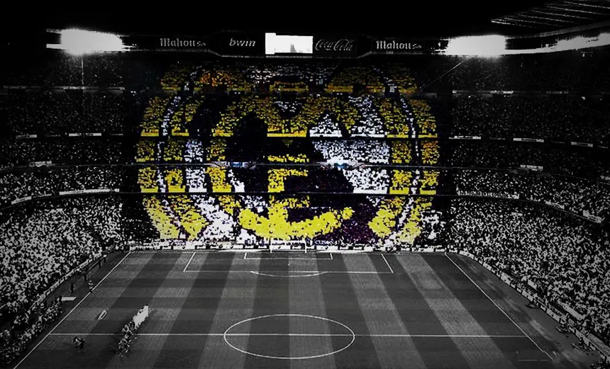
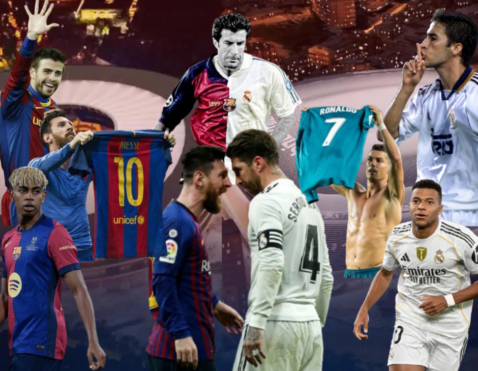

Historia
El Real Madrid Club de Fútbol, más conocido simplemente como Real Madrid, es una entidad polideportiva con sede en Madrid, España. Fue registrada oficialmente como club de fútbol por sus socios el 6 de marzo de 1902 con el objeto de la práctica y desarrollo de este deporte —si bien sus orígenes datan del año 1900,[8] y su denominación de (Sociedad) Madrid Foot-ball Club de octubre de 1901—. Decano del fútbol madrileño,[n. 3] tuvo a Julián Palacios y los hermanos Juan Padrós y Carlos Padrós como principales valedores de su creación.[9]
Identificado por su color blanco —del que recibe el apelativo de «blancos» o «merengues»—,[1][2] es uno de los cuatro clubes profesionales de fútbol del país cuya entidad jurídica no es la de sociedad anónima deportiva (S. A. D.),[n. 4] ya que su propiedad recae en sus más de 90 000 socios.[10] Otra salvedad comparte con el Athletic Club y el Fútbol Club Barcelona al participar sin interrupción en la máxima categoría de la Liga Nacional de Fútbol Profesional, la Primera División de España, desde su establecimiento en 1929.[11][12] En ella posee los honores de haber sido el primer líder histórico de la competición,[13] el de equipo con más títulos, y el de la máxima puntuación en una sola edición.[14][n. 5]
Es miembro creador, fundador y cofundador de varias de las competiciones españolas más longevas antes de la existencia de los pertinentes órganos rectores: el Campeonato Regional Centro, o la Copa de España.[22][23] A nivel internacional fue uno de los miembros fundadores de la FIFA,[24][25] estamento que le concedió la Orden del Mérito por su especial relevancia en el fútbol[26][n. 10] y lo señala como uno de los «clubes clásicos» de España[27] tras colaborar en el nacimiento de algunas de las competiciones o asociaciones más prestigiosas como la Copa de Europa,[24][28][29][30] la Copa Intercontinental,[31] o la Asociación de Clubes Europeos.[32][n. 11]
En cuanto a los logros deportivos, es una de las entidades más laureadas y reconocidas del mundo en ambas disciplinas,[31][37] y ha sido galardonado por los insignes estamentos internacionales de la FIFA como el Mejor Club del siglo XX,[38] y como el Mejor Club Europeo del siglo XX por la Federación Internacional de Historia y Estadística de Fútbol (IFFHS),[39] reconocimientos también otorgados por otras instituciones como la revista Kicker Sportmagazin,[40][41] o por la organización Globe Soccer para el vigente siglo XXI.[42] Entre ambas disciplinas suma un total de trece campeonatos mundiales y veinticinco Copas de Europa, más que ningún otro club europeo en el conjunto de ambos deportes,[n. 13] situándose décimo en palmarés polideportivo si se toman en cuenta secciones que el club no posee.[43] A nivel nacional es el club español más laureado.[44][45]
Un 33 % de los aficionados al fútbol encuestados a fecha de 2021 en España por el portal de estadísticas de mercado y opinión Statista lo señalan como el club más popular,[50] mientras que a nivel internacional es también una de las entidades más reconocidas del mundo[51][52] con más de 600 millones de seguidores estimados en 2025.[53][54] Su alto número de simpatizantes, y las estimadas 45 millones de visitas mensuales en Google,[55] repercuten en que sea una de las sociedades deportivas con mayor valor en el mercado y una de las que más ganancias obtiene anualmente. Su valor se tasa en unos 6750 millones de dólares y sus ingresos son superiores a los mil millones de euros por temporada (1185 millones sin contar traspasos de jugadores en el curso 2024-25), primer y único club de fútbol en lograrlo a fecha de 2025

Rivalidades
En el plano deportivo el equipo madrileño mantiene una rivalidad con varios de sus homólogos. En España se da con el Athletic Club, con quien mantuvo intensos duelos en los primeros años del fútbol español por ser en aquel entonces dos de los mejores equipos que existían y con quien disputó varias finales de Copa; con el Fútbol Club Barcelona, rivalidad con trascendencia a nivel mundial en los partidos conocidos como «el clásico»,[612] y que se remonta a 1916.[613][614] Frente al Atlético de Madrid disputa el «derbi madrileño», siendo esta su mayor rivalidad histórica,[615] que ha vuelto a posicionarse como tal en tiempos recientes y cuyo primer duelo fue en 1906.[616][617]
En cuanto a Europa, su máxima rivalidad se da con el Bayern de Múnich de Alemania desde los años setenta debido a sus polémicos enfrentamientos en la Liga de Campeones,[618] o con la Associazione Calcio Milan de Italia con el que mantiene la disputa deportiva por ser el equipo más laureado a nivel internacional del continente, si bien esta rivalidad con el equipo italiano se ha disminuido casi por completo, debido a la no clasificación del equipo rossonero a competiciones europeas en los últimos años.[619]
Otros conatos de menor repercusión fueron puntualmente contra el Real Sporting de Gijón,[620] con el Club Atlético Osasuna,[621] o con el Valencia Club de Fútbol.[622][623] Sin embargo, ninguna de ellas obtuvo mayor repercusión en el panorama nacional como las que mantiene con los ya citados bilbaínos, barcelonistas y atléticos y con los bávaros y milanistas en el internacional siendo estos cinco clubes los de enfrentamientos deportivos más reseñables contra el conjunto madrileño.

.png)